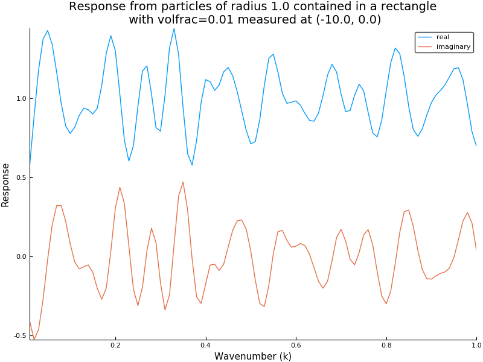

Simple random particles example
If it isn't installed, clone it from github
try using MultipleScattering
catch
Pkg.clone("https://github.com/jondea/MultipleScattering.jl.git")
end
using MultipleScatteringDefine the fraction of the volume the particles will take up, their radius and which wavenumbers (k) to evaluate at
volfrac = 0.01
radius = 1.0
k_arr = collect(LinRange(0.01,1.0,100))
simulation = FrequencySimulation(volfrac,radius,k_arr)We use the Plots package to plot both the response at the listener position and the whole field for a specific wavenumber (k=0.8)
using Plots
plot(
plot(simulation),
plot(simulation,0.8;res=100,drawshape=true)
)

Things to try
- Try changing the volume fraction, particle radius and k values we evaluate